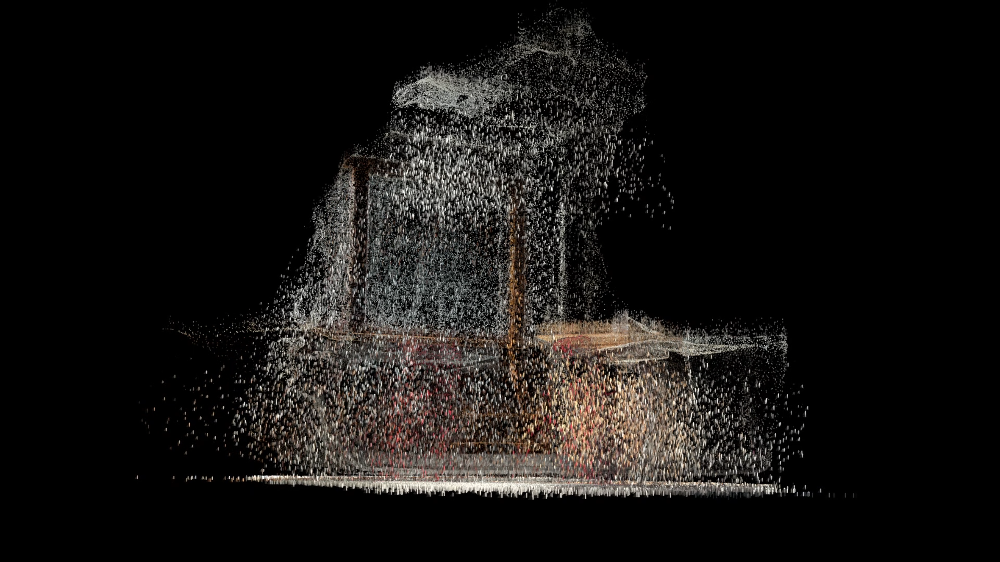
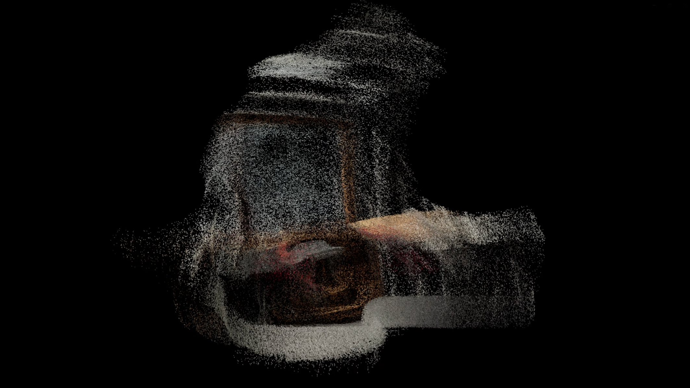
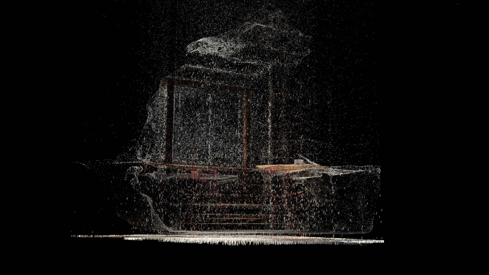
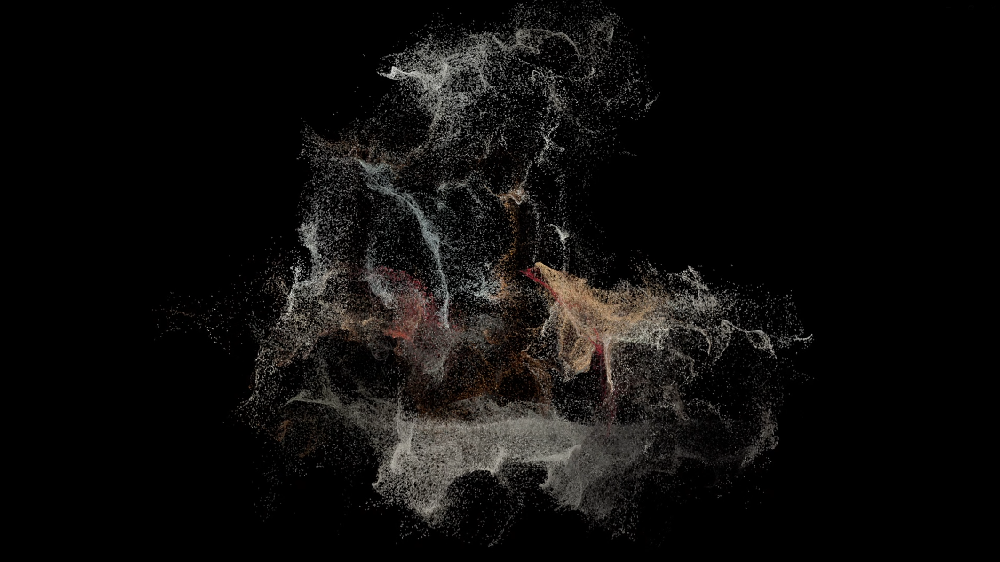
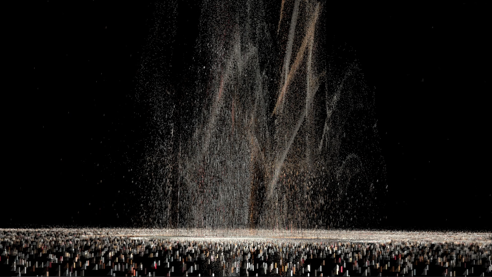

Radost
2024
Audio Visuals Performance
The project explores my personal connection to the space and interpretation of its future. Showing proccess of its eroison. The visuals are created from a 3D scan that were turned into particles. The effects are controlled via MIDI keyboard during a live performance, accompanied with self created audio.
Software: Unity, Blender, Polycam, Ableton
Controlled with a MIDI Keyboard






